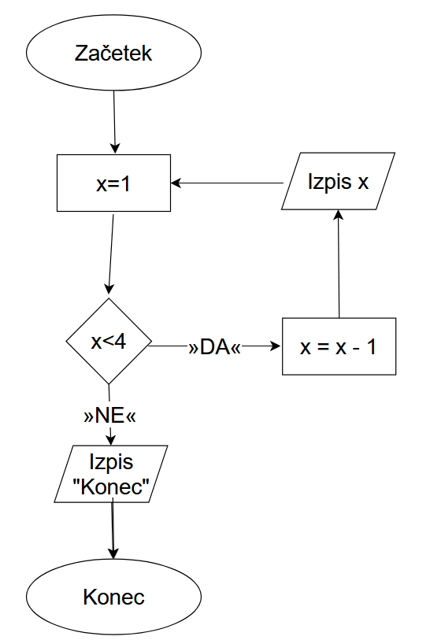
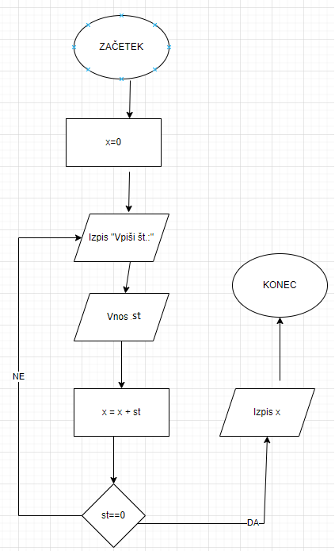

Deli programov - Izrazi, stavki, trditev
Izraz (expression)
In programming, an expression is a combination of values, variables, operators, and functions that a programming language interprets to produce another value. Essentially, an expression is any piece of code that can be evaluated to a value. For example, in the expression 2 + 3, the result is 51.
Expressions can be simple, like a single variable or constant (x, 42), or more complex, involving multiple operations and function calls ((a + b) * c). They are fundamental building blocks in programming because they allow you to perform calculations, manipulate data, and control the flow of a program21.
Would you like to see some examples of expressions in a specific programming language?
Izraz (statement)
The entire line x = y + 1; is an assignment statement because it ends with a semicolon and performs an action (assigning a value to x).
Ponovimo
Naštej in opiši elemente DP (diagrama poteka).
Kako se povezujejo elementi diagrama poteka z Von Neumannovo arhitekturo računalnika?
Zapiši 10 možnosti za V/I operacije.
Kakšna je razlika med
prvi primer
Izpis avto
drugi primer
Izpis "avto"
tretji primer
Beri (vnos) avto
Katere lastnosti algoritmov sledeči algoritem ne izpolnjuje?

Kakšna je prednost tolmača napram prevajalniku?
Lastno vprašanje! (Vprašanja so pomembnejša od odgovorov😊)
Vprašanja in odgovori
Kaj lahko vnesemo za vhodne podatke? Naštej nekaj različnih primerov?
Števila, tekst, seznam, klik na ikono, datum, čas, sistemska ura, naključnega (število iz okolja) (lahko natipkamo, lahko kliknemo, lahko povemo, …)
Kakšno dodano vrednost dobimo z uvedbo vnosa podatkov uporabnika? (Kaj pomeni, če program nima vhodnih podatkov, ki jih lahko vnese uporabnik)?
Program se odzove na naš vhod. 1, 2 , sestej-> 3
Vedno dela eno in isto.
Kako izgleda program, ki nima vhodnih podatkov?
x = 3
Izpis x
Ne moreš vplivati na dogajanje (izvajanje) programa.
Ali vnos podatkov med ali na začetku izvajanja programa vpliva na izvajanje programa? Razloži s primerom.
Ja vpliva.
X = vnos števila
X = 3Izpis x
Zakaj si moramo vnesene podatke zapomniti?
Da jih lahko uporabimo. Tudi večkrat.
Vnos x
Vnos y
Vsota = x + y
Katero možnost za hranjenje vhodnih podatkov nam nudijo algoritmi (programski jeziki)?
Spremenljivke. (seznami).
Definiraj pojem izraz (expression)! Napiši primer enega izraza.
Kombinacija spremenljivk, vrednosti, funkcij, ki se obdelajo in vrnejo vrednost.
3 + 5*2
2*z*3*x
x*y*z
3*random(10)
Opiši postopek, ki se izvede pri ukazu vnos!
Program se ustavi
Čaka uporabnika, da vnese podatke (število, črko, niz znakov)
Kje (kdaj) uporabiti?
Kadar moramo vnesti vhodne podatke!
Če želimo da se program ustavi!
Kdaj v diagramu poteka uporabimo znak (ukaz) za vnos?
Ko se v
programu obdelujejo podatki, ki jih je treba vnesti.Ko potrebujemo podatke.
Če želimo ustaviti program.
Kakšna je razlika pri računanju izrazov na (žepnem) kalkulatorju ter računalniku?
Kako zapišemo operatorje za:
· Seštevanje +
· Odštevanje -
· Množenje *
· Deljenje /
· Računanje ostanka pri celoštevilskem deljenju (mod) %
3+2=>5
5-3=>2
17%2=>1 17/2=8 ost 1 (2*8=16+1=17)
17%4=>1
17%5=>2
V kakšnem vrstnem redu pišemo ukaze? Kako se bodo izvedli?
V vrsticah. Izvedejo se vrstico za vrstico. Prva se izvede prva vrstica (tista, na vrhu).
Vrstica
Vrstica
Ali strojni jezik vsebuje komentarje? Zakaj!
Ne. Ker komentar ni namenjen računalniku, ampak programerju.
Kako se v programskem jeziku java napiše komentar (zapiši oba načina).
// komentar
/* komentar */
Kdo uporablja komentarje (kdo jih piše, kdo jih bere)?
Programerji! Samo programerji!
Kako naredimo uporabniku prijazen program?
Pri vnosu napišemo kaj naj vnese!
Jasna navodila in lahek vnos podatkov (izpis primera, gumbek za pomoč, …).
Kaj je operator prirejanja (assignment)?
=
X = 2
Spremenimo vrednost spremenljivke x na 2.
Y= 2*3- 12
Najprej ovrednotimo izraz ne desni strani operatorja prirejanja, nato shranimo dobljeno vrednost v spremenljivko na levi strani operatorja prirejanja.
Napiši vrstni red izvajanja stavka z = 3*(2+x) = to ni »je enako«
2+x
2+x pomnožimo s 3
Shranimo rezultat v z
Napiši vrstni red izvajanja stavka z = 3*(2+z)
Naloga
Sledi algoritmu. Zapiši izpis na ekran, spremembe spremenljivk. Uporabnik naj vstavi vrednosti:1, 5, -2, 7, 0, 8.
Naloga:
Izpiši števila med 1 in 100.
Izpiši števila med 100 in 200.
Izpiši števila med 200 in 1.
Naloga: Uporabnik vpisuje števila, dokler ne vpiše število 100.
Naloga: Uporabnik vnaša števila, dokler ne vnese števila 999. Ko vnese to število, izpiše program KONEC. Napiši diagram poteka.
Scenarij1: 1 6 9 -1 999 KONEC |
Scenarij2: 999 KONEC |
|---|
Komentarji:
Diagram poteka je neodvisen od programskega jezika.
Za vnos in izpis uporabimo paralelogram.
Za vnos poljubne vrednosti uporabimo spremenljivko. Ne pišemo narekovajev.
V:x in ne V:«x«
Naloga: Uporabnik vnaša števila. Števila sproti sešteva. Ko vnese število 0, se program konča. Izpiši vsoto vseh števil in število vnesenih števil. Napiši diagram poteka.
Scenarij1: 1 6 9 -1 0 Vsota vseh števil je 15. Vnesel si 4 števila. |
Scenarij2: 1 1 1 0 Vsota vseh števil je 3. Vnesel si 3 števila. |
|---|
Naloga:

Vprašanje: Kaj »naredi« algoritem?
Odgovor: Program sešteva vpisana števila. Konča se, ko vnesemo število 0. Izpiše vsoto vseh števil.
Vprašanje: Predlagaj spremembo algoritma tako, da se konča, ko je vsota vpisanih števil 1000 ali več.
D.N. : Naredi preizkus.
Opazimo: V diagramu opazimo, da se del ponavlja. Ta ponavljajoči del imenujemo zanka (loop). V programskih jezikih se zanka ponavlja (izvaja), ko je pogoj izpolnjen. Če imamo program narejen tako, da se ponavlja, ko pogoj ni izpolnjen, moramo:
Zamenjati vrednosti DA in NE.
Negirati pogoj.
Primerjalni operatorji nastopajo, kjer moramo vpisati pogoj (kara).
| (Primerjalni) operator | Zanikan (primerjalni) operator |
|---|---|
| == | != |
| != | == |
| < | >= |
| > | <= |
| <= | > |
| >= | < |
Naloga: Nariši diagram poteka, ki uporabnika vpraša po dveh številih. Nato izpiše vsa števila med njima. Napiši dva scenarija (primera, kako bo izgledal program). Naredi preizkus za oba scenarija.
D.N. Reši primera ProGO na strani 73 in 74. Zapiši v zvezek, ali če imaš natisnjeno na list.
Naloga: Nariši diagram poteka, kjer uporabnik vpiše dve števili. Nato izpiše manjše za njim pa večje. Pred začetkom napiši dva različna primera programa. Diagram testiraj!
Naloga: Nariši diagram poteka, kjer uporabnik vpiše dve števili. Nato izpiše manjše za njim pa večje. Diagram naredi tako, da bo izpis vedno v istem vrstnem redu, po potrebi pa se zamenjata vrednosti spremenljivk.
Naloga: Uporabnik naj vpiše svoje ime in število x. Program izpiše vpisano ime x-krat.
Naloga: Izpiši vsaj števila na intervalu med 7 in 2011, ki so deljiva z osem. Na vsakih 40 števil ustavi program in čakaj na uporabnikovo potrditev. Razdeli nalogo na manjše, obvladljive dele.
Primer: 8, 16,24,32,….320
328,…..
Najprej naredi zanko, ki izpisuje števila od 8,9,10,…2010.
Preden izpišeš število, preveri, če je deljivo z 8.
Ko izpišeš število, povečaj števec izpisanih za 1. Ko števec doseže 40 ustavi program. Po pritisku na gumb, števec resetiraj na 0.
Rešitev: Nasvet. Program razdelimo na manjše , obvladljive dele. Kaj bi pa lahko bilo takšni manjši deli? 1) Izpiši vsa števila med 7 in 2011. Ko imamo to, 2) dodamo, da vsako število pred izpisom preverimo, če je deljivo z 9. Samo v tem primeru ga izpišemo. 3) Nato dodamo še dodaten pogoj, da program po vsakih 40 izpisih ustavimo. Hraniti moramo torej vrednost, kolikokrat smo že izpisali.
Naloga: Dijak vpisuje ocene. Vpiše lahko samo pravilne ocene. Končamo z vpisom števila 0. Na koncu se izpiše se število ocen in povprečna ocena.
Primer:
Vpiši oceno:1
Vpiši oceno:1
Vpiši oceno:5
Vpiši oceno:6
NAPAKA
Vpiši oceno:5
Vpiši oceno:0
Vpisane ocene: 4.
Povprečje 12 / 4 = 3.
Pomoč: Najprej označite:
Z rdečo vrednosti, ki se bodo spreminjale. Vsakič, ko bomo »diagram zagnali« bo drugačne.
Z zeleno vrednosti, ki bodo konstantne. Vsakič, ko bomo »diagram zagnali« bodo enake.
Naloga: Napiši diagram poteka.
Primer 1:
Vpiši 1. št: 23
Vpiši 2. št: 1
Vpiši operator (+,-):+
23 - 1 = 22
Primer 2:
Vpiši 1. št: 23
Vpiši 2. št: 1
Vpiši operator (+,-):*
Napačen operator!
Naloga (ACM)
Odbojkaške točke
Tvoj prijatelj Jan z obale v svojem prostem času sodi na odbojkaških tekmah. Seveda pa bi on raje igral odbojko in na plaži ribaril, zato bi rad razmišljajoči del sojenja preložil nate. On bo zapisal zaporedje dogodkov, ti pa mu izračunaj, ali to točko dobi ekipa 1 ali 2.
Dogodki, ki jih bo Jan napisal, so treh vrst:
1. O1 oz. O2 pomeni odboj ekipe 1 oz. 2. Na začetku vsake točke mora nekdo iz ene ekipe žogo servirati (ima en odboj) na drugo stran mreže. Od takrat naprej mora vsaka ekipa žogo odbiti vsaj enkrat in največ trikrat ter jo z zadnjim odbojem spraviti nazaj čez mrežo.
2. P1 oz. P2 pomeni, da je žoga padla v polje ekipe 1 oz. 2. Če ekipi žoga pade v lastno polje, točko izgubi, če pa jo spravi v polje druge ekipe, točko dobi.
3. I pomeni, da je žoga šla izven igrišča (v out) ali neveljavno letela pod mrežo. Ekipa, ki se ji to zgodi, izgubi točko.
Napiši program (ali podprogram oz. funkcijo), ki iz seznama dogodkov izračuna, katera ekipa dobi prvo točko. Podrobnosti tega, v kakšni obliki je seznam dogodkov podan, določi sam in jih v svoji rešitvi tudi opiši.
Zaporedje se vedno začne z dogodkom O1 ali O2, kar nam pove, katera ekipa je servirala žogo. Zaporedje se ne konča nujno takoj po tistem, ko ena od ekip dobi točko.
Primer 1: O3 Napaka. Ni te ekipe. |
Primer 2: O1 O1 Napaka. Ekipa 1 več kot trije odboji. |
Primer 3: O2 O2 Napaka. Ekipa 2 več kot trije odboji. |
Primer 3: O2 O1 O1 O1 O1 Napaka. Ekipa 2 več kot trije odboji. |
|---|
Napiši diagram, ki preveri samo ti dve zadevi
Preveri, če je začetek pravilen (O1, O2).
Preveri, če je katera izmed ekip odbila več kot 3 krat – pol je napaka (ustavi program).
Primer:
Zapiši primer s tremi pravilnimi izmenjavami in nato igralec udari v avt
Zapiši primer, ko igralec servira v avt
Zapiši primer, ko se igralec pri skoku v blok zaplete v mrežo
Dodatno navodilo: program v neskončni zanki bere vhod.
Vir: https://rtk.ijs.si/2024/rtk2024.pdf
Naloga: Izpiši zaporedje 1/1+1/2+1/3+1/4+…. Členov naj bo 171. Obenem izračunaj vsoto. Po vsakem (7) členu počakaj, da uporabnik potrdi.
Napiši diagram poteka. VEDNO -> Sam sledi algoritmu, da preveriš, če si pravilno naredil.
Izpis: 1/1 + 1/2 + … 1/171.
Zanka se izvede 171 krat.
Naloga: Napiši diagram poteka, kjer uporabnik vnese dve števili. Program števili zamenja (zamenja vrednosti v spremenljivkah) in izpiše v obratnem vrstnem redu, kot je vpisano.
Dodatno – za vse: brez uvedbe nove spremenljivke.
Scenarij 1
A:1
B:2
2
1